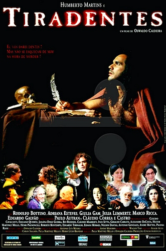

Tiradentes (1999)
O filme mostra uma visão bem diferente da convencional, acerca dos fatos políticos que envolveram a Inconfidência Mineira e a condenação dos conjurados. Joaquim José da Silva Xavier, conhecido como Tiradentes, teria sido condenado à morte por ser o único dos revoltosos que não tinha grandes posses. Por outro lado, grande parte da elite de Ouro Preto estava envolvida no levante, inclusive o próprio visconde de Barbacena, mas a maioria não foi processada e nem sequer presa. Uma visão intrigante, porém com respaldo em muitas pesquisas recentes. Tiradentes foi um dos vencedores do prêmio Resgate do Cinema Brasileiro, promovido pelo Ministério da Cultura.
Joaquim (2017)
Trata-se de uma biografia romanceada do herói cívico brasileiro Joaquim José da Silva Xavier, mais conhecido como Tiradentes, ícone da Inconfidência Mineira, movimento este que propunha a separação do Brasil de Portugal. O filme narra os fatos antecedentes à prisão e morte do inconfidente, permeados por momentos de sua vida pessoal.
O Mártir da Independência: Tiradentes (1977)
Cinebiografia do alferes Joaquim José da Silva Xavier, o Tiradentes, célebre personagem do processo de independência brasileira, seguindo a vida desse popular herói nacional desde os primeiros momentos da insurreição comandada por ele até seus últimos dias e sua morte na forca, após ser traído por Silvério dos Reis, incialmente companheiro de lutas no movimento da Inconfidência.